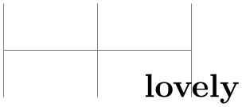

The TikZ and PGF Packages
Manual for version 3.1.10
The Basic Layer
100 Hierarchical Structures: Package, Environments, Scopes, and Text¶
100.1 Overview¶
pgf uses two kinds of hierarchical structuring: First, the package itself is structured hierarchically, consisting of different packages that are built on top of each other. Second, pgf allows you to structure your graphics hierarchically using environments and scopes.
100.1.1 The Hierarchical Structure of the Package¶
The pgf system consists of several layers:
- System layer.
-
The lowest layer is called the system layer, though it might also be called “driver layer” or perhaps “backend layer”. Its job is to provide an abstraction of the details of which driver is used to transform the .dvi file. The system layer is implemented by the package pgfsys, which will load appropriate driver files as needed.
The system layer is documented in Part X.
- Basic layer.
-
The basic layer is loaded by the package pgfcore and subsequent use of the command \usepgfmodule to load additional modules of the basic layer.
The basic layer is documented in the present part.
- Frontend layer.
-
The frontend layer is not loaded by a single package. Rather, different packages, like TikZ or pgfpict2e, are different frontends to the basic layer.
The TikZ frontend is documented in Part III.
Each layer will automatically load the necessary files of the layers below it.
In addition to the packages of these layers, there are also some library packages. These packages provide additional definitions of things like new arrow tips or new plot handlers.
The library packages are documented in Part V.
100.1.2 The Hierarchical Structure of Graphics¶
Graphics in pgf are typically structured hierarchically. Hierarchical structuring can be used to identify groups of graphical elements that are to be treated “in the same way”. For example, you might group together a number of paths, all of which are to be drawn in red. Then, when you decide later on that you like them to be drawn in, say, blue, all you have to do is to change the color once.
The general mechanism underlying hierarchical structuring is known as scoping in computer science. The idea is that all changes to the general “state” of the graphic that are done inside a scope are local to that scope. So, if you change the color inside a scope, this does not affect the color used outside the scope. Likewise, when you change the line width in a scope, the line width outside is not changed, and so on.
There are different ways of starting and ending scopes of graphic parameters. Unfortunately, these scopes are sometimes “in conflict” with each other and it is sometimes not immediately clear which scopes apply. In essence, the following scoping mechanisms are available:
-
1. The “outermost” scope supported by pgf is the {pgfpicture} environment. All changes to the graphic state done inside a {pgfpicture} are local to that picture.
In general, it is not possible to set graphic parameters globally outside any {pgfpicture} environments. Thus, you can not say \pgfsetlinewidth{1pt} at the beginning of your document to have a default line width of one point. Rather, you have to (re)set all graphic parameters inside each {pgfpicture}. (If this is too bothersome, try defining some macro that does the job for you.)
-
2. Inside a {pgfpicture} you can use a {pgfscope} environment to keep changes of the graphic state local to that environment.
The effect of commands that change the graphic state are local to the current {pgfscope}, but not always to the current TeX group. Thus, if you open a TeX group (some text in curly braces) inside a {pgfscope}, and if you change, for example, the dash pattern, the effect of this changed dash pattern will persist till the end of the {pgfscope}.
Unfortunately, this is not always the case. Some graphic parameters only persist till the end of the current TeX group. For example, when you use \pgfsetarrows to set the arrow tip inside a TeX group, the effect lasts only till the end of the current TeX group.
-
3. Some graphic parameters are not scoped by {pgfscope} but “already” by TeX groups. For example, the effect of coordinate transformation commands is always local to the current TeX group.
Since every {pgfscope} automatically creates a TeX group, all graphic parameters that are local to the current TeX group are also local to the current {pgfscope}.
-
4. Some graphic parameters can only be scoped using TeX groups, since in some situations it is not possible to introduce a {pgfscope}. For example, a path always has to be completely constructed and used in the same {pgfscope}. However, we might wish to have different coordinate transformations apply to different points on the path. In this case, we can use TeX groups to keep the effect local, but we could not use {pgfscope}.
-
5. The \pgftext command can be used to create a scope in which TeX “escapes back” to normal TeX mode. The text passed to the \pgftext is “heavily guarded” against having any effect on the scope in which it is used. For example, it is possible to use another {pgfpicture} environment inside the argument of \pgftext.
Most of the complications can be avoided if you stick to the following rules:
-
• Give graphic commands only inside {pgfpicture} environments.
-
• Use {pgfscope} to structure graphics.
-
• Do not use TeX groups inside graphics, except for keeping the effect of coordinate transformations local.
100.2 The Hierarchical Structure of the Package¶
Before we come to the structuring commands provided by pgf to structure your graphics, let us first have a look at the structure of the package itself.
100.2.1 The Core Package¶
To use pgf, include the following package:
-
\usepackage{pgfcore} % LaTeX ¶
-
\input pgfcore.tex % plain TeX
-
\usemodule[pgfcore] % ConTeXt
This package loads the complete core of the “basic layer” of pgf, but not any modules. That is, it will load all of the commands described in the current part of this manual, but it will not load frontends like TikZ. It will also load the system layer. To load additional modules, use the \usepgfmodule command explained below.
The following package is just a convenience.
-
\usepackage{pgf} % LaTeX ¶
-
\input pgf.tex % plain TeX
-
\usemodule[pgf] % ConTeXt
-
\usepackage[draft]{pgf}
-
\usepackage[version=⟨version⟩]{pgf}
This package loads the pgfcore and the two modules shapes and plot.
In LaTeX, the package takes two options:
When this option is set, all images will be replaced by empty rectangles. This can speedup compilation.
Indicates that the commands of version ⟨version⟩ need to be defined. If you set ⟨version⟩ to 0.65, then a large bunch of “compatibility commands” are loaded. If you set ⟨version⟩ to 0.96, then these compatibility commands will not be loaded.
If this option is not given at all, then the commands of all versions are defined.
100.2.2 The Modules¶
-
\usepgfmodule{⟨module names⟩} ¶
Once the core has been loaded, you can use this command to load further modules. The modules in the ⟨module names⟩ list should be separated by commas. Instead of curly braces, you can also use square brackets, which is something ConTeXt users will like. If you try to load a module a second time, nothing will happen.
Example: \usepgfmodule{matrix,shapes}
What this command does is to load the file pgfmodule⟨module⟩.code.tex for each ⟨module⟩ in the list of ⟨module names⟩. Thus, to write your own module, all you need to do is to place a file of the appropriate name somewhere TeX can find it. LaTeX, plain TeX, and ConTeXt users can then use your library.
The following modules are available for use with pgfcore:
-
• The plot module provides commands for plotting functions. The commands are explained in Section 112.
-
• The shapes module provides commands for drawing shapes and nodes. These commands are explained in Section 106.
-
• The decorations module provides commands for adding decorations to paths. These commands are explained in Section 103.
-
• The matrix module provides the \pgfmatrix command. The commands are documented in Section 107.
100.2.3 The Library Packages¶
There is a special command for loading library packages. The difference between a library and module is the following: A library just defines additional objects using the basic layer, whereas a module adds completely new functionality. For instance, a decorations library defines additional decorations, while a decoration module defines the whole code for handling decorations.
-
\usepgflibrary{⟨list of libraries⟩} ¶
Use this command to load further libraries. The list of libraries should contain the names of libraries separated by commas. Instead of curly braces, you can also use square brackets. If you try to load a library a second time, nothing will happen.
Example: \usepgflibrary{arrows}
This command causes the file pgflibrary⟨library⟩.code.tex to be loaded for each ⟨library⟩ in the ⟨list of libraries⟩. This means that in order to write your own library file, place a file of the appropriate name somewhere where TeX can find it. LaTeX, plain TeX, and ConTeXt users can then use your library.
You should also consider adding a TikZ library that simply includes your pgf library.
100.3 The Hierarchical Structure of the Graphics¶
100.3.1 The Main Environment¶
Most, but not all, commands of the pgf package must be given within a {pgfpicture} environment. The only commands that (must) be given outside are commands having to do with including images (like \pgfuseimage) and with inserting complete shadings (like \pgfuseshading). However, just to keep life entertaining, the \pgfshadepath command must be given inside a {pgfpicture} environment.
-
\begin{pgfpicture} ¶
-
⟨environment contents⟩
-
\end{pgfpicture}
This environment will insert a TeX box containing the graphic drawn by the ⟨environment contents⟩ at the current position.
The size of the bounding box. The size of the box is determined in the following manner: While pgf parses the ⟨environment contents⟩, it keeps track of a bounding box for the graphic. Essentially, this bounding box is the smallest box that contains all coordinates mentioned in the graphics. Some coordinates may be “mentioned” by pgf itself; for example, when you add circle to the current path, the support points of the curve making up the circle are also “mentioned” despite the fact that you will not “see” them in your code.
Once the ⟨environment contents⟩ have been parsed completely, a TeX box is created whose size is the size of the computed bounding box and this box is inserted at the current position.
Hello \begin{pgfpicture}
\pgfpathrectangle{\pgfpointorigin}{\pgfpoint{2ex}{1ex}}
\pgfusepath{stroke}
\end{pgfpicture} World!
Sometimes, you may need more fine-grained control over the size of the bounding box. For example, the computed bounding box may be too large or you intentionally wish the box to be “too small”. In these cases, you can use the command \pgfusepath{use as bounding box}, as described in Section 104.6.
The baseline of the bounding box. When the box containing the graphic is inserted into the normal text, the baseline of the graphic is normally at the bottom of the graphic. For this reason, the following two sets of code lines have the same effect, despite the fact that the second graphic uses “higher” coordinates than the first:
Rectangles \begin{pgfpicture}
\pgfpathrectangle{\pgfpointorigin}{\pgfpoint{2ex}{1ex}}
\pgfusepath{stroke}
\end{pgfpicture} and \begin{pgfpicture}
\pgfpathrectangle{\pgfpoint{0ex}{1ex}}{\pgfpoint{2ex}{1ex}}
\pgfusepath{stroke}
\end{pgfpicture}.
You can change the baseline using the \pgfsetbaseline command, see below.
Rectangles \begin{pgfpicture}
\pgfpathrectangle{\pgfpointorigin}{\pgfpoint{2ex}{1ex}}
\pgfusepath{stroke}
\pgfsetbaseline{0pt}
\end{pgfpicture} and \begin{pgfpicture}
\pgfpathrectangle{\pgfpoint{0ex}{1ex}}{\pgfpoint{2ex}{1ex}}
\pgfusepath{stroke}
\pgfsetbaseline{0pt}
\end{pgfpicture}.
Including text and images in a picture. You cannot directly include text and images in a picture. Thus, you should not simply write some text in a {pgfpicture} or use a command like \includegraphics or even \pgfimage. In all these cases, you need to place the text inside a \pgftext command. This will “escape back” to normal TeX mode, see Section 100.3.3 for details.
Remembering a picture position for later reference. After a picture has been typeset, its position on the page is normally forgotten by pgf and also by TeX. This means that is not possible to reference a node in this picture later on. In particular, it is normally impossible to draw lines between nodes in different pictures automatically.
In order to make pgf “remember” a picture, the TeX-if \ifpgfrememberpicturepositiononpage should be set to true. It is only important that this TeX-if is true at the end of the {pgfpicture}-environment, so you can switch it on inside the environment. However, you can also just switch it on globally, then the positions of all pictures are remembered.
There are several reasons why the remembering is not switched on by default. First, it does not work for all backend drivers (currently, it works only for pdfTeX). Second, it requires two passes of TeX over the file; on the first pass all positions will be wrong. Third, for every remembered picture a line is added to the .aux-file, which may result in a large number of extra lines.
Despite all these “problems”, for documents that are processed with pdfTeX and in which there is only a small number of pictures (less than a hundred or so), you can switch on this option globally, it will not cause any significant slowing of TeX.
-
\pgfpicture
-
⟨environment contents⟩
-
\endpgfpicture
The plain TeX version of the environment. Note that in this version, also, a TeX group is created around the environment.
-
\startpgfpicture
-
⟨environment contents⟩
-
\stoppgfpicture
This is the ConTeXt version of the environment.
-
\ifpgfrememberpicturepositiononpage ¶
Determines whether the position of pictures on the page should be recorded. The value of this TeX-if at the end of a {pgfpicture} environment is important, not the value at the beginning.
If this option is set to true of a picture, pgf will attempt to record the position of the picture on the page. (This attempt will fail with most drivers and when it works, it typically requires two runs of TeX.) The position is not directly accessible. Rather, the nodes mechanism will use this position if you access a node from another picture. See Sections 106.3.2 and 17.13 for more details.
-
\pgfsetbaseline{⟨dimension⟩} ¶
This command specifies a \(y\)-coordinate of the picture that should be used as the baseline of the whole picture. When a pgf picture has been typeset completely, pgf must decide at which height the baseline of the picture should lie. Normally, the baseline is set to the \(y\)-coordinate of the bottom of the picture, but it is often desirable to use a different height.
Text
\begin{pgfpicture}
\pgfpathcircle{\pgfpointorigin}{1ex}\pgfusepath{stroke}
\end{pgfpicture},
\begin{pgfpicture}
\pgfsetbaseline{0pt}
\pgfpathcircle{\pgfpointorigin}{1ex}\pgfusepath{stroke}
\end{pgfpicture},
\begin{pgfpicture}
\pgfsetbaseline{.5ex}
\pgfpathcircle{\pgfpointorigin}{1ex}\pgfusepath{stroke}
\end{pgfpicture},
\begin{pgfpicture}
\pgfsetbaseline{-1ex}
\pgfpathcircle{\pgfpointorigin}{1ex}\pgfusepath{stroke}
\end{pgfpicture}.
-
\pgfsetbaselinepointnow{⟨point⟩} ¶
This command specifies the baseline indirectly, namely as the \(y\)-coordinate that the given ⟨point⟩ has when the command is called.
-
\pgfsetbaselinepointlater{⟨point⟩} ¶
This command also specifies the baseline indirectly, but the \(y\)-coordinate of the given ⟨point⟩ is only computed at the end of the picture.
Hello
\begin{pgfpicture}
\pgfsetbaselinepointlater{\pgfpointanchor{X}{base}}
% Note: no shape X, yet
\pgfnode{cross out}{center}{world.}{X}{\pgfusepath{stroke}}
\end{pgfpicture}
100.3.2 Graphic Scope Environments¶
Inside a {pgfpicture} environment you can substructure your picture using the following environment:
-
\begin{pgfscope} ¶
-
⟨environment contents⟩
-
\end{pgfscope}
-
• The line width.
-
• The stroke and fill colors.
-
• The dash pattern.
-
• The line join and cap.
-
• The miter limit.
-
• The canvas transformation matrix.
-
• The clipping path.
All changes to the graphic state done inside this environment are local to the environment. The graphic state includes the following:
Other parameters may also influence how graphics are rendered, but they are not part of the graphic state. For example, the arrow tip kind is not part of the graphic state and the effect of commands setting the arrow tip kind are local to the current TeX group, not to the current {pgfscope}. However, since {pgfscope} starts and ends a TeX group automatically, a {pgfscope} can be used to limit the effect of, say, commands that set the arrow tip kind.
\begin{pgfpicture}
\begin{pgfscope}
{
\pgfsetlinewidth{2pt}
\pgfpathrectangle{\pgfpointorigin}{\pgfpoint{2ex}{2ex}}
\pgfusepath{stroke}
}
\pgfpathrectangle{\pgfpoint{3ex}{0ex}}{\pgfpoint{2ex}{2ex}}
\pgfusepath{stroke}
\end{pgfscope}
\pgfpathrectangle{\pgfpoint{6ex}{0ex}}{\pgfpoint{2ex}{2ex}}
\pgfusepath{stroke}
\end{pgfpicture}
\begin{pgfpicture}
\begin{pgfscope}
{
\pgfsetarrows{->}
\pgfpathmoveto{\pgfpointorigin}\pgfpathlineto{\pgfpoint{2ex}{2ex}}
\pgfusepath{stroke}
}
\pgfpathmoveto{\pgfpoint{3ex}{0ex}}\pgfpathlineto{\pgfpoint{5ex}{2ex}}
\pgfusepath{stroke}
\end{pgfscope}
\pgfpathmoveto{\pgfpoint{6ex}{0ex}}\pgfpathlineto{\pgfpoint{8ex}{2ex}}
\pgfusepath{stroke}
\end{pgfpicture}
At the start of the scope, the current path must be empty, that is, you cannot open a scope while constructing a path.
It is usually a good idea not to introduce TeX groups inside a {pgfscope} environment.
-
\pgfscope
-
⟨environment contents⟩
-
\endpgfscope
Plain TeX version of the {pgfscope} environment.
-
\startpgfscope
-
⟨environment contents⟩
-
\stoppgfscope
This is the ConTeXt version of the environment.
The following scopes also encapsulate certain properties of the graphic state. However, they are typically not used directly by the user.
-
\begin{pgfinterruptpath} ¶
-
⟨environment contents⟩
-
\end{pgfinterruptpath}
This environment can be used to temporarily interrupt the construction of the current path. The effect will be that the path currently under construction will be “stored away” and restored at the end of the environment. Inside the environment you can construct a new path and do something with it.
An example application of this environment is the arrow tip caching. Suppose you ask pgf to use a specific arrow tip kind. When the arrow tip needs to be rendered for the first time, pgf will “cache” the path that makes up the arrow tip. To do so, it interrupts the current path construction and then protocols the path of the arrow tip. The {pgfinterruptpath} environment is used to ensure that this does not interfere with the path to which the arrow tips should be attached.
This command does not install a {pgfscope}. In particular, it does not call any \pgfsys@ commands at all, which would, indeed, be dangerous in the middle of a path construction.
-
\pgfinterruptpath
-
⟨environment contents⟩
-
\endpgfinterruptpath
Plain TeX version of the environment.
-
\startpgfinterruptpath
-
⟨environment contents⟩
-
\stoppgfinterruptpath
ConTeXt version of the environment.
-
\begin{pgfinterruptpicture} ¶
-
⟨environment contents⟩
-
\end{pgfinterruptpicture}
This environment can be used to temporarily interrupt a {pgfpicture}. However, the environment is intended only to be used at the beginning and end of a box that is (later) inserted into a {pgfpicture} using \pgfqbox. You cannot use this environment directly inside a {pgfpicture}.
\begin{pgfpicture}
\pgfpathmoveto{\pgfpoint{0cm}{0cm}} % In the middle of path, now
\newbox\mybox
\setbox\mybox=\hbox{
\begin{pgfinterruptpicture}
Sub-\begin{pgfpicture} % a subpicture
\pgfpathmoveto{\pgfpoint{1cm}{0cm}}
\pgfpathlineto{\pgfpoint{1cm}{1cm}}
\pgfusepath{stroke}
\end{pgfpicture}-picture.
\end{pgfinterruptpicture}
}
\pgfqbox{\mybox}%
\pgfpathlineto{\pgfpoint{0cm}{1cm}}
\pgfusepath{stroke}
\end{pgfpicture}\hskip3.9cm
-
\pgfinterruptpicture
-
⟨environment contents⟩
-
\endpgfinterruptpicture
Plain TeX version of the environment.
-
\startpgfinterruptpicture
-
⟨environment contents⟩
-
\stoppgfinterruptpicture
ConTeXt version of the environment.
-
\begin{pgfinterruptboundingbox} ¶
-
⟨environment contents⟩
-
\end{pgfinterruptboundingbox}
This environment temporarily interrupts the computation of the bounding box and sets up a new bounding box. At the beginning of the environment the old bounding box is saved and an empty bounding box is installed. After the environment the original bounding box is reinstalled as if nothing has happened.
-
\pgfinterruptboundingbox
-
⟨environment contents⟩
-
\endpgfinterruptboundingbox
Plain TeX version of the environment.
-
\startpgfinterruptboundingbox
-
⟨environment contents⟩
-
\stoppgfinterruptboundingbox
ConTeXt version of the environment.
100.3.3 Inserting Text and Images¶
Often, you may wish to add normal TeX text at a certain point inside a {pgfpicture}. You cannot do so “directly”, that is, you cannot simply write this text inside the {pgfpicture} environment. Rather, you must pass the text as an argument to the \pgftext command.
You must also use the \pgftext command to insert an image or a shading into a {pgfpicture}.
-
\pgftext[⟨options⟩]{⟨text⟩} ¶
-
/pgf/text/left(no value) ¶
-
/pgf/text/right(no value) ¶
-
/pgf/text/top(no value) ¶
-
/pgf/text/bottom(no value) ¶
-
/pgf/text/base(no value) ¶
-
/pgf/text/at=⟨point⟩(no default) ¶
-
/pgf/text/x=⟨dimension⟩(no default) ¶
-
/pgf/text/y=⟨dimension⟩(no default) ¶
This command will typeset ⟨text⟩ in normal TeX mode and insert the resulting box into the {pgfpicture}. The bounding box of the graphic will be updated so that all of the text box is inside. By default, the text box is centered at the origin, but this can be changed either by giving appropriate ⟨options⟩ or by applying an appropriate coordinate transformation beforehand.
The ⟨text⟩ may contain verbatim text. (In other words, the ⟨text⟩ “argument” is not a normal argument, but is put in a box and some \aftergroup hackery is used to find the end of the box.)
pgf’s current (high-level) coordinate transformation is synchronized with the canvas transformation matrix temporarily when the text box is inserted. The effect is that if there is currently a high-level rotation of, say, 30 degrees, the ⟨text⟩ will also be rotated by thirty degrees. If you do not want this effect, you have to (possibly temporarily) reset the high-level transformation matrix.
The ⟨options⟩ keys are used with the path /pgf/text/. The following keys are defined for this path:
The key causes the text box to be placed such that its left border is on the origin.
The key causes the text box to be placed such that its right border is on the origin.
This key causes the text box to be placed such that its top is on the origin. This option can be used together with the left or right option.
This key causes the text box to be placed such that its bottom is on the origin.
This key causes the text box to be placed such that its baseline is on the origin.
Translates the origin (that is, the point where the text is shown) to ⟨point⟩.
Translates the origin by ⟨dimension⟩ along the \(x\)-axis.

This key works like the x option.
100.4 Object Identifiers¶
Graphical objects can have an identifier, which allows you to reference the object later on. For instance, you could reference the object as the target of a hyperlink (although this capability is not necessarily implemented by drivers) or as the target of an animation; indeed, animations always need an object identifier to identify the to-be-animated object.
Attaching an identifier to an object is a two-step process:
-
1. You call \pgfuseid{⟨id⟩} to choose an id, which is a normal string.
-
2. Next, you call one of several commands like \pgfidscope or \pgftext, which create an object. This object will have then have the id.
100.4.1 Commands for Creating Graphic Objects¶
The following system level commands create an object with an id:
-
1. \pgfsys@begin@idscope, which creates a graphic scope.
-
2. \pgfsys@viewboxmeet or \pgfsys@viewboxslice, which create view boxes,
-
3. \pgfsys@fill, \pgfsys@stroke, and all other path usage command,
-
4. \pgfsys@hbox or \pgfsys@hboxsynced, which create text boxes, and
-
5. \pgfsys@animate..., which create animations.
These system layer commands are, in turn, called by the following basic layer commands (and, also, by the commands that call them, in turn):
-
• \pgfidscope, which creates an id scope (see below).
-
• \pgfviewboxscope, which creates a view box.
-
• \pgfusepath, which creates a path.
-
• \pgftext and \pgfnode and \pgfmultipartnode, which create text boxes and nodes, and
-
• \pgfanimateattribute, which creates an animation.
-
\begin{pgfidscope} ¶
-
⟨environment contents⟩
-
\end{pgfidscope}
Creates a graphic scope that will have the id last used with \pgfuseid attached to, provided such an id was set and was not already used with another object. In the latter cases, no graphic scope is created. Thus, if you wish to ensure that a graphic scope is created, you must (additionally) call \pgfscope inside or outside the id scope.
The PlainTeX and ConTeXt versions of the environment are:
-
\pgfidscope
-
⟨environment contents⟩
-
\endpgfidscope
-
\startpgfidscope
-
⟨environment contents⟩
-
\stoppgfidscope
100.4.2 Settings and Querying Identifiers¶
In order to attach an identifier to an object, you first use the following command:
-
\pgfuseid{⟨name⟩} ¶
-
\pgfusetype{⟨type⟩} ¶
-
• Inside the command \pgfviewboxscope, the type .view is used for the view object.
-
• Inside the command \pgfmultipartnode, the type .behind background is used for the scope of drawings behind the background. Similarly, .before background and .behind foreground and finally .before foreground are used with the respective parts of a node.
-
• Also inside a node, .background and .foreground are used as types of the background and foreground paths, respectively.
-
• Finally, inside a node, for each text part, the text part’s name is used as a type (so .text is used for the main part).
-
• The type .path is used with a named path (named using the name key). This is the graphic object you need to reference when you wish to morph a path.
-
• The type .path picture is used with the scope of the optional path picture.
-
• The type .path fill is used with the path used for filling. This is not the same as the normal path in case the path is filled and patterned, for instance.
-
• The type .path shade is used with the path used for shading a path.
-
\pgfpushtype ¶
-
\pgfpoptype ¶
The ⟨name⟩ is a string by which the object will be referenced (see \pgfidrefnextuse). The next time a graphic object is created in the current TeX scope, the name will be attached to it (actually, it will get a system layer identifier attached to it that is automatically created using \pgfsys@new@id, the ⟨name⟩ is bound to that identifier and it can be retrieved using \pgfidrefnextuse). This holds true only for the next object: If a second object is created, it will not get the name attached to it. This does not mean, however, that you cannot attach the same name to different objects; you just need to call \pgfuseid again before each object.
Besides the ⟨name⟩ (or, more precisely, besides the system layer identifier it refers to), the current identifier type is also important: Actually, a graphic object is not referenced by a system layer identifier, but by the combination of the identifier and a type. You can use the following commands for modifying the type used for the creation of objects:
Sets the type used for the referencing of graphic objects for the current scope to ⟨type⟩ or, if ⟨type⟩ starts with a dot, appends ⟨type⟩ to the current type.
You use this command with compound graphic objects: Before each part of a graphic object, set the type to an appropriate value. Now, if the object is named using \pgfuseid, you can later on access all parts of the compound object using the combination of the ⟨name⟩ used with \pgfuseid and the type of the part.
As an example, this system is used to give you access to the different parts of a node: When you say \pgfuseid{mynode} and then create a node, you can use mynode with the empty type to reference the graphics scope that encompasses the whole node, but also mynode together with the type background to access the background path of the node.
In detail, pgf uses this command to set the following types:
In addition, TikZ uses this command in the following situations:
Pushes the current type on an internal global stack. The idea is to allow you to temporarily change the current type without having to open a TeX scope.
Restores the most recent type from the internal global stack of types.
-
\pgfclearid ¶
Clears the current id (and type) for the local scope.
-
\pgfidrefnextuse{⟨macro⟩}{⟨name⟩} ¶
This command assigns a system layer identifier (the identifier returned by \pgfsys@new@id) to the ⟨macro⟩, namely the one that will be used the next time \pgfuseid is used. You use this command for “forward referencing”.
A typical use case is the following: A key like whom for animations uses this command to get the system identifier that will be used for a future object. Then, this identifier can be passed to system layer commands like \pgfsys@animation@whom.
Note that the “next” use need not be on the same page (or there may not even be any use at all), in which case the reference will not refer to any object.
-
\pgfidrefprevuse{⟨macro⟩}{⟨name⟩} ¶
Works like \pgfidrefnextuse, only it references the most recent previous use of the ⟨name⟩. As for \pgfidrefnextuse, the most recent use need not be on the same page.
-
\pgfaliasid{⟨alias⟩}{⟨name⟩} ¶
Creates an alias of a name inside the current TeX scope. After calling this command, you can use ⟨alias⟩ anywhere where you would normally use ⟨name⟩. Note that the binding between ⟨alias⟩ and ⟨name⟩ is not kept when \pgfuseid is used on the ⟨name⟩ (or the ⟨alias⟩).
-
\pgfgaliasid{⟨1⟩}{⟨2⟩} ¶
Like \pgfaliasid, only the alias is set globally.
-
\pgfifidreferenced{⟨name⟩}{⟨then code⟩}{⟨else code⟩} ¶
If ⟨name⟩ has been referenced, ⟨then code⟩ is executed, otherwise ⟨else code⟩.
100.5 Resource Description Framework Annotations (RDFa)¶
With certain output formats (in particular, with svg) you can insert annotations into the output file following the standard set by the resource description framework (known as “rdf”, please consult the literature on rdf and rdfa for an introduction to resource descriptions and ontologies and their purpose in general). To do so, you call one (or several) of the following commands before you call \pgfidscope. The attributes and values you specify using the commands will then be added to the resulting scope (if the driver supports this, which is only the case for svg at the moment). As an example, when you write
\pgfrdfresource{/fruits/apple}
\pgfidscope
...
\pgfendidscope
in the resulting svg file you get
resource="/fruits/apple">
...
Most of the following commands just set a single attribute for the next id scope. In some cases, however, repeated calling of these commands makes sense and causes the passed values to accumulate as in the following example:
\pgfrdfresource{/fruits/apple}
\pgfrdfproperty{http://foo.com/props/juicy}
\pgfrdfproperty{http://foo.com/props/green}
\pgfidscope
...
\pgfendidscope
Now you get:
resource="/fruits/apple"
property="http://foo.com/props/juicy http://foo.com/props/green">
...
The following commands “accumulate”: \pgfrdfproperty, \pgfrdfrel, \pgfrdfrev and also the command \pgfrdftypeof.
-
\pgfrdfabout{⟨text⟩} ¶
Adds the rdf attribute about="⟨text⟩" to the next id scope (please see the rdfa specification for details on the semantics of about in the context of the resource description framework).
The following commands work the same way.
-
\pgfrdfcontent{⟨text⟩} ¶
-
\pgfrdfdatatype{⟨text⟩} ¶
-
\pgfrdfhref{⟨text⟩} ¶
-
\pgfrdfinlist ¶
-
\pgfrdfprefix{⟨text⟩} ¶
-
\pgfrdfproperty{⟨text⟩} ¶
-
\pgfrdfrel{⟨text⟩} ¶
-
\pgfrdfresource{⟨text⟩} ¶
-
\pgfrdfrev{⟨text⟩} ¶
-
\pgfrdfsrc{⟨text⟩} ¶
-
\pgfrdftypeof{⟨text⟩} ¶
-
\pgfrdfvocab{⟨text⟩} ¶
100.6 Error Messages and Warnings¶
Sometimes, a command inside pgf may fail. In this case, two commands are useful to communicate with the author:
-
\pgferror{⟨message⟩} ¶
Stops the processing of the current document and prints out the ⟨message⟩. In LaTeX, this will be done using \PackageError, otherwise \errmessage is used directly.
-
\pgfwarning{⟨message⟩} ¶
Prints the ⟨message⟩ on the output, but does not interrupt the processing. In LaTeX, this will be done using \PackageWarning, otherwise a write to stream \(17\) is used.